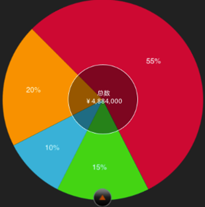
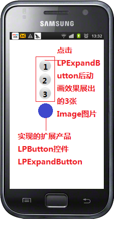

为便于客户端系统升级改造工作量的评估，对涉及到的主要工作量进行描述，以备参考。
客户端 Ver3.2 产品同 Ver5.x 主要区别在控件创建方式和业务逻辑处理两个方面。控件创建方面，Ver3.2 产品 XML 解析采用 SAX 解析方式，解析时根据标签匹配的节点形成相应的控件，而 Ver5.x 产品 XML 解析采用 DOM 解析方式，用反射方式创建控件。新的实现方式更加灵活、代码耦合性小。业务逻辑方面，Ver3.2 产品客户端有部分业务逻辑处理、而 Ver5.x 产品将这部分控制全部交由后台通过产品封装、或客户端扩展的 Lua 接口控制。新实现方式将界面展现部分和业务逻辑分离、代码复用性高、更符合 MVC 模式。
实现全新的功能。实现方式需要在 Class.xml 文件中添加一个配置节点。建立标签名称和实现类之间的照应关系。实现类需要继承 RYTControl。
示例如下：
在 Class.xml 中添加标签和实现类照应关系。
实现类需要继承 RYTControl。
// RYTCakeControl 继承 RYTControl
@interfaceRYTCakeControl : RYTControl<CVRotateCustomView Delegate>
{
id delegate;
NSMutableArray *allProperty_;
NSMutableArray *allContent_;
int selectedIndex_;
CVRotateCustomView *rotateCustomView;
UILabel *resultLabel;
UIImageView *circleView;
int _checkedIndex;
}
部分实现代码。
- (void)initWithParam:(NSDictionary *)params {
[superinitWithParam:params];
[selfinitView];
}
- (void)initView
{
[superinitView];
allProperty_ = [[NSMutableArrayalloc] init];
allContent_ = [[NSMutableArrayalloc] init];
}
- (CGSize)sizeThatFits:(CGSize)size {
[selfapplyStyle];
[selfcreateCakeControl];
[selfapplyStyle];
returnself.frame.size;
}
界面显示效果如图所示:

注意：通过添加新的标签实现新控件的方式不推荐使用。
Ver5.x 的产品不能完全满足 Ver3.2 的需求，主要通过以下两个方面扩展控件来实现。
示例如下：
在 Class.xml 中添加标签和实现类照应关系。
<object class="HXRYTButtonControl" init="initWithParam" tag="input" type="button">
<param key="Frame">0.0,0.0,320.0,30.0</param>
<param key="Focus">NO</param>
<param key="Hidden">NO</param>
<param key="Enable">YES</param>
<param key="FrontColor">#000000</param>
<param key="FontSize">18.0</param>
</object>
实现类需要继承 RYTButtonControl。
// 接口文件
@interfaceHXRYTButtonControl : RYTButtonControl
{
BOOL isSendButton;
int second;
NSTimer *timerRun;
BOOL canGetSms;
}
// 部分实现文件
- (void)getAllPropertyWith:(TBXMLAttribute *)attribute {
[supergetAllPropertyWith:attribute];
NSString *type = (NSString *)[property_ objectForKey:TAG_PROPERTY_TYPE];
if (type && [type isEqualToString:@"submit"]) {
[selfsetTarget:self action:@selector(submitAction:)];
}
else if (type && [type isEqualToString:@"button"]) {
[selfsetTarget:self action:@selector(buttonAction:)];
NSString *timerstr=[property_ objectForKey:TAG_PROPERTY_TIMER];
if (timerstr&&[timerstrisEqualToString:@"true"]) {
isSendButton=1;
canGetSms = YES;
}
}
self.value = [property_ objectForKey:TAG_PROPERTY_VALUE];
[self.buttonsetTitle:(NSString *)[property_ objectForKey:TAG_PROPERTY_VALUE]forState:UIControlStateNormal];
}
后台返回报文。
<input type="button" class="info_submit" value="提交" name="but_login" timer="true"/>
显示效果如图所示:
示例代码中通过对复写 getAllPropertyWith: 方法将自定义的 timer 属性应用到自定义的 HXRYTButtonControl 控件上、实现单击按钮的倒计时功能。
示例代码：
在 Class.xml 中添加标签和实现类照应关系。
<object class="HXRYTButtonControlEx" init="initWithParam" tag="input" type="buttonEx">
<param key="Frame">0.0,0.0,320.0,30.0</param>
<param key="Focus">NO</param>
<param key="Hidden">NO</param>
<param key="Enable">YES</param>
<param key="FrontColor">#000000</param>
<param key="FontSize">18.0</param>
</object>
实现类需要继承 RYTButtonControl。
//接口文件
@interfaceHXRYTButtonControlEx: RYTButtonControl
{
//...
}
示例中通过 type=buttonEx 来扩展 RYTButtonControl。
注意：在 Ver3.2 产品中通过新增标签来扩展控件的方式要修改为扩展属性或属性值的方式实现，这样能确保与 HTML 规范尽可能一致。
这类控件大部分是组合控件或者是控件内部有很强的逻辑，譬如：电影票控件、火车票控件、彩票控件、城市控件等，需要客户端人员先理清控件间的逻辑和初始化方法，并熟悉 TBXML 父子节点的遍历的方法。
电影票控件示例如下：
// 在 Class.xml 创建映射关系
<object class="RYTCoverFlowAdditions" init="initWithParam" tag="coverflow">
<param key="Frame">0.0,0.0,320.0,410.0</param>
</object>
// RYTCoverFlowAdditions 复写初始化方法
- (id)initWithParam:(NSDictionary *)params {
[superinitWithParam:params];
[selfinitView];
coverWidth = DEFAULT_COVER_WIDTH;
coverHeight = DEFAULT_COVER_HEIGHT;
return self;
}
// 复写 initDefaultValue 方法并且调用自定义的方法
- (void)initDefaultValue {
[superinitDefaultValue];
[selfinitData];
[selfcreateView];
[selfdownImage];
}
// 为实现功能自定义 createView 方法
- (void)createView {
coverDescription = [[UILabelalloc] initWithFrame:CGRectMake((coverWidth - COVER_DES_LABEL_WIDTH)/2,(coverHeight - COVER_DES_LABEL_HEIGHT - 20), COVER_DES_LABEL_WIDTH, COVER_DES_LABEL_HEIGHT)];
coverDescription.backgroundColor = [UIColorclearColor];
coverDescription.textColor = [UIColorwhiteColor];
coverDescription.textAlignment = UITextAlignmentCenter;
coverDescription.font = [UIFont systemFontOfSize:20];
if(desValueArray != nil && [desValueArray count]>0)
coverDescription.text = (NSString *)[desValueArray objectAtIndex:0];
[coverDescriptionsetTextColor:[UIColorblackColor]];
// 初始化 CoverFlow 主界面
CGRectrect = CGRectMake(0.0, 0.0, coverWidth, coverHeight); //default
openFLowView = [[AFOpenFlowViewalloc] initWithFrame:rect];
[openFLowViewsetDataSource:self];
[openFLowViewsetViewDelegate:self];
[openFLowViewsetNumberOfImages:coverNumber];
CGRect rect1 = self.frame;
rect1.size.width = DEFAULT_COVER_WIDTH;
rect1.size.height = DEFAULT_COVER_HEIGHT;
self.frame = rect1;
[openFLowViewaddSubview:coverDescription];
[view_ addSubview:openFLowView];
}
示例中的 downImage 方法和 createView 根据复合控件的特点自定义的方法，以满足需求。界面展现效果如图所示：
Ver5.x 产品 Lua 接口不能满足 App 对业务逻辑的控制时，需要客户端人员新增、扩展 Lua 接口实现。
示例代码如下：
@interfaceHXAppleSkinLua : LuaObject<ASIHTTPRequestDelegate>{
NSMutableDictionary *refFunction_;
unsigned char *pinESessionkeyData_;
}
static int hxPostAsyn(lua_State *lua) {
lua_s = lua;
return 0;
}
static int hxPostSyn(lua_State *lua) {
lua_s = lua;
return 0;
}
const struct luaL_reghxAppleSkin_libs [] = {
{"hxPostAsyn", hxPostAsyn},
{"hxPostSyn", hxPostSyn},
{NULL, NULL}
};
int luaopen_appleSkinlibs(lua_State *lua) {
luaL_register(lua, "sd", hxAppleSkin_libs);
return 1;
}
- (void)openAppleSkin:(lua_State *)lua {
lua_s = lua;
luaopen_appleSkinlibs(lua);
}
示例代码中 HXAppleSkinLua 是一个新增的 Lua 接口、我们通过注册 Lua 库的方式，将一系列方法通过 luaL_register 接口全部注册。需要注意的是新增的 Lua 接口类需要继承 LuaObject。
示例代码如下：
// 扩展 LuaHistory 接口
@interfaceHXLuaHistory : LuaHistory
-(void)clearAll;
@end
static int read(lua_State *lua) {
const char *data = lua_tostring(lua, 2);
if (data) {
NSString *string = [NSStringstringWithCString:data encoding:NSUTF8StringEncoding];
int number = [string intValue];
id content = [sharedHXLuaHistoryreadHistory:number];
if ([content isKindOfClass:[NSString class]]) {
lua_pushstring(lua, [content UTF8String]);
}
else if ([content isKindOfClass:[NSData class]]) {
NSString *strContent = [[[NSStringalloc] initWithData:content encoding:NSUTF8StringEncoding] autorelease];
lua_pushstring(lua, [strContent UTF8String]);
}
else {
return 0;
}
}
return 1;
}
static int clearAllHistory(lua_State *lua)
{
[sharedHXLuaHistoryclearAll];
return 0;
}
const struct luaL_reghxhistory_libs [] = {
{"read", read},
{"clearAllHistory", clearAllHistory},
{NULL, NULL}
};
int luaopen_hxhistorylibs(lua_State *lua) {
luaL_register(lua, "history", hxhistory_libs);
return 1;
}
- (void)openHistory:(lua_State *) lua {
[super openHistory:lua]; //注册父类的history方法
luaopen_hxhistorylibs(lua);
}
示例代码中客户端 App 扩展产品 LuaHistory 接口、为其增加了 read 和 clearAllHistory 两个Lua接口，为了使产品 LuaHistory 接口能继续使用，需要调用注册父类的 history 方法 [super openHistory:lua];
对 iOS 平台来说，目前不支持新增、扩展样式。从产品的角度看，目前产品已经支持全部常用 CSS 样式。从项目风险角度看，引入新样式或扩展样式对产品的波及面广、评估、测试困难。若 Ver3.2 有样式的变更采用其它样式组合或变换手法实现。
由于新框架不再采用由 if 分支来确定生成哪种控件，而是采用标签名映射的方式进行生成，所以控件生成的基本逻辑完全更改，老框架的新增控件代码是无法直接复用的。
例：
以北京银行 5.x 升级项目，新增日历样式日期控件为例做简要讲解。（由于模板的工作与客户端工作紧密相连，在讲解过程中，为便于理解，会将模板的某些工作也做简要说明，若需了解模板的详细工作，请参照 5.x 产品升级模板改造文档。）
Step 1：
为 Input 标签，新增 type 属性值 "type = date"，标示采用日历样式的日期控件。（此项为模板工作）
<input type ="date" class="common_util_table_label_right" name="beginDate" border="0" style="-wap-input-format:'date';-wap-input-required:'true'"/>
说明： 此示例采用为已有标签新增 type 属性值来迎合需求，若在项目实施过程中，现有标签无法满足需求，可为标签增加新的属性，如 text = "abc" 等来满足需求。
由于产品采用标准 HTML 格式来设计，所以不建议新增标签来新增控件。
Setp 2：
com.rytong.specialwidget 包（各项目新增特殊控件都在此包）下新建日历样式日期控件类 LPDateField。 此类要实现产品控件基类 Component。
public class LPDateField extends Component {
}
在 LPDateField 中实现与 5.x 产品相关，必须重写的方法。
@Override
public void initRealView(Activity activity, String value) {
// TODO Auto-generated method stub
realView_ = new MyLPDateField(activity);
}
@Override
public void mouldH() throws Exception {
super.mouldH();
//具体实现代码；
}
添加 LPDateField 的内部类 MyLPDateField，该类要继承 Android 系统控件 EditText，并实现产品框架控件接口 CompositedComponent，然后重写必要的方法。
public class MyLPDateField extends EditText implements CompositedComponent{
public MyLPDateField(Context context) {
super(context);
}
@Override
public Component composited() {
// TODO Auto-generated method stub
return LPDateField.this;
}
@Override
public boolean onTouchEvent(MotionEvent event) {
boolean isAction = false;
switch (event.getAction()) {
case MotionEvent.ACTION_DOWN:
//响应代码
break;
case MotionEvent.ACTION_MOVE:
//响应代码
break;
default:
//响应代码
}
return super.onTouchEvent(event);
}
}
Step 3：
由于 5.x 新产品采用标签名映射的方式生成不同控件，所以，需要修改项目下 assets 文件夹下 widget.xml 文件中名称与控件的映射关系。
<!—日历样式日期控件 -->
<object class="com.rytong.specialwidget.LPDateField" init="initWithParam" tag="input" type="date">
<param key="Frame_">0,0,320,30</param>
</object>
日历样式日期控件效果图:
老框架中控件的扩展都是直接在产品中进行改动，而新框架产品代码是封装好的，不可由各项目直接修改，否则后期产品版本升级会导致冲突，若无法进行升级，最新版本产品中的新功能新效果，该项目都无法使用。
例：
以北京银行 5.x 升级项目，扩展 Button 功能控件为例做简要讲解。
Step 1：
与模板开发人员协商新的标签 type 属性值 "expandButton" 来满足功能需求。
<input name='expandButton1' class="expandButton1" type="expandButton" images="test1.png_test1.png_test1.png" imagestag="1_2_3" callback="timer_sleep"/>
说明：
此处实现涉及 LUA 接口的实现，但本示例略过 LUA 方面的讲解，只做客户端控件显示性的讲解。LUA 接口扩展，在文档后面会做讲解。
Step 2：
com.rytong.specialwidget 包（各项目新增特殊控件都在此包）下新建扩展 Button 控件类 LPExpandButton。 此类要实现产品控件基类 Component。
public class LPExpandButton extends Component {
}
在 LPExpandButton 中实现与 5.x 产品相关，必须重写的方法。
@Override
public void initRealView(Activity activity, String value) {
// TODO Auto-generated method stub
realView_ = new MyLPExpandButton(activity);
}
@Override
public void mouldH() throws Exception {
super.mouldH();
//具体实现代码；
}
添加 LPExpandButton 的内部类 MyLPExpandButton，该类要继承产品中 LpButton 类，然后重写必要的方法。
public class LPExpandButton extends LPButton{
public MyLPExpandButton (Context context) {
super(context);
//具体实现代码；
}
@Override
public Component composited() {
// TODO Auto-generated method stub
return MyLPExpandButton.this;
}
@Override
public boolean onTouchEvent(MotionEvent event) {
boolean isAction = false;
switch (event.getAction()) {
case MotionEvent.ACTION_DOWN:
//响应代码
break;
case MotionEvent.ACTION_MOVE:
//响应代码
break;
default:
//响应代码
}
return super.onTouchEvent(event);
}
}
Step 3：
同样的，需要修改项目下 assets 文件夹下 widget.xml 文件中名称与控件的映射关系。
<!-- 扩展Button 小i -->
<object class="com.rytong.specialwidget.LPExpandButton" init="initWithParam" tag="input" type="expandButton">
<param key="Frame_">0,0,200,30</param>
<param key="Focus_">NO</param>
<param key="Hidden_">NO</param>
<param key="Enable_">YES</param>
</object>
扩展Button控件效果图:

例：
对 Button 进行扩展，实现倒计时功能。
Step1：
<input type="button" class="info_submit" value="提交" name="but_login" timer="true"/>
Step2：同上例
Step3：
新增属性前面两步 Step 都是相同的，客户端需要注意 Widget.xml 的映射关系。
所以需要修改项目下 assets 文件夹下 widget.xml 文件中名称与控件的映射关系。
<!-- 扩展Button 小i -->
<object class="com.rytong.specialwidget.LPTimerButton" init="initWithParam" tag="input" type="Button" Timer="true">
<param key="Frame_">0,0,200,30</param>
<param key="Focus_">NO</param>
<param key="Hidden_">NO</param>
<param key="Enable_">YES</param>
</object>
说明： 同新增控件一样，不推荐只用新增标签来进行扩展。
虽然 4.3 版本产品已经采用新产品的基本框架，但是项目实施在采用 4.3 产品的时候，都对产品进行了直接改动，所以升级 5.x 也无法直接替换产品代码来实现，其工作量也并不轻松。
说明： 由于 4.3 升级是直接 copy 项目中源代码进行大量的调试修改。这里不再举例讲解。
大型控件（例如电影票）一般布局非常特殊产品中支持的普通控件无法完美的拼接展现其效果，但这种控件页面布局也很固定，只是数据在不停的更换。所以，实现这种控件的思路是：只用一个标签来确定使用哪种控件，在其标签属性内标示要显示的数据，数据格式可以采用 Json 数据格式。
例：
以交通银行电影票（影票相关信息）控件为例
Step 1：
新定义标签 coverflow 来作为电影票控件的使用，其填充数据可使用 json 数据来展现。
<coverflow name="coverflow1" class="coverflow"
covers='[
{
"cover":"http://www.wangpiao.com/wangp/UploadFiles/filminfo/2012/4/2012416161517.jpg",
"title":"第一电影",
"director":"西红柿",
"personator":"萝卜、白菜",
"type":"青春、励志",
"hyperLink":"http://192.168.1.1/nidaye"
},
"cover":"http://www.wangpiao.com/wangp/UploadFiles/filminfo/2012/4/2012416161517.jpg",
"title":"第九电影",
"director":"西红柿",
"personator":"萝卜、白菜",
"type":"青春、励志",
"hyperLink":"http://192.168.1.1/nidaye"
}
]'
/>
Step 2：
创建 LPCoverFlow 类，使之继承 Component 基类。
public class LPCoverFlow extends Component {
@Override
public void initRealView(Activity activity, String nodeValue) {
realView_ = new MyCoverFlow(activity);
}
}
创建 LPCoverFlow 的内部类 MyLPCoverFlow，这里继承 Android 系统的 RelativeLayout 控件进行自定义，将其作为整个电影票信息展示控件的最外层控件，后面再在其内部具体实现各个小控件的布局以及自定义绘制。
class MyCoverFlow extends RelativeLayout implements CompositedComponent {
public MyCoverFlow(Context context) {
super(context);
}
@Override
public Component composited() {
return LPCoverFlow.this;
}
}
创建 MyLPCoverFlow 的内部类 CoverFlow，继承 Android 系统控件 Gallery，并实现必需的接口，这个类是展示电影海报图片的控件，是电影片信息控件的子控件，不由报文信息控制生成与布局，由父控件控制布局，该控件只接收信息，填充在相应位置做展现。
class CoverFlow extends Gallery implements OnItemSelectedListener, ViewFactory, OnItemClickListener {
public CoverFlow(Context context) {
super(context);
}
@Override
public boolean onTouchEvent(android.view.MotionEvent event) {
switch (event.getAction()) {
case MotionEvent.ACTION_DOWN:
//响应代码
break;
case MotionEvent.ACTION_UP:
//响应代码
break;
default:
//响应代码
break;
}
return super.onTouchEvent(event);
};
class ImageAdapter extends BaseAdapter {
.
.
.
//此处省略各种实现代码
}
说明： 由于大型控件其布局是固定的，并不由模板报文中的样式数据来控制，所以，在这里并没有对 mouldH() 方法进行重写。
Step 3：
在 widget.xml 文件中注册自定义的电影票控件。
<!-- 电影票coverflow控件 -->
<object class="com.bankcomm.ui.specialwidget.LPCoverFlow" init="initWithParam"
tag="coverflow">
<param key="Frame_">10,10,300,300</param>
<param key="Focus_">NO</param>
<param key="Hidden_">NO</param>
<param key="Enable_">NO</param>
</object>
电影票（影票相关信息）效果图:
项目实施升级还有一个大的部分需要耗费大量时间和精力，那就是 Lua 接口部分，可能我们的控件显示已经足够满足我们的项目需要，但是 lua 接口肯定是远远不够的。这样也就需要模板开发人员具备较高技术水平，最产品足够的了解，且有足够清晰的思路来设计接口的逻辑。
由于项目实施中所用 lua 接口比产品要早，项目中在实现 lua 接口的时候是当时项目实施人员协商定的接口，其思路会与产品有所差异，或者思路相同只是方法名的命名有所不同，那么升级 5.x 需要开发人员熟知目前 lua 接口想要实现的效果，同时也对产品熟悉，使用产品的思路，对该 lua 接口重新设计实现。
例：
以农行中使用 lua 接口获取某个 Lable 控件，并对控件进行赋值处理的功能示例说明。
Local lable = document:getElementByName("lableName");
Local mLable = Lable[1]:getProperty();
mLable.value = "余额为1200.00元";
控件中对应的 java 方法名为 setPropertyByName
Local lable = document:getElementByName("lableName");
Lable[1]:setPropertyByName("value","余额为1200.00元");
此示例所有工作在模板方面，客户端不需要做额外的工作，只需配合模板将 lua 脚本编写正确即可。
例：
以新增 lua 库 LuaOffline 为例
Step1：com.rytong.luafuction 包下新增 Lua 接口类 LuaOffline。
Step2：构造方法中，添加接口及方法的声明。后台调用接口名 offline ，方法 download(callback) 。
public LuaOffline() {
try{
Component.LUASTATE.pushObjectValue(this);
Component.LUASTATE.setGlobal("luaoffline");
final String luahead = "offline = {}; ";
final String luafc1 = "function offline:download(callback) luaoffline:download(callback); end;";
Component.LUASTATE.gc(LuaState.LUA_GCCOLLECT, 0);
Component.LUASTATE.LdoString(luahead.concat(luafc1));
}
catch (LuaException e) {
Utils.printException(e);
}
}
Step3：定义接口下的方法。
public void download(Object callback) {
//方法体
}
Step4: 在 LuaLib 类的构造方法中添加对 LuaOffline 的初始化。
LuaOffline luaoffline = new LuaOffline();
Step5：与后台交互时，调用新增接口的方法格式为：
offline.download(callback);
以新增 LuaSystem 库 system:getInfo(name) 接口为例。
Step1：首先找到接口对应的类 LuaSystem（类的构造方法中定义了其接口名）。
Step2：添加相应的方法。
public Object getInfo(Object name) {
//方法体
}
说明： 需是 public， 否则脚本执行时报 Invalid method call. No such method.
Step3：构造方法中，对新增的方法添加注册。
final String luafc2 = "function system:getInfo(name)
local a1 = luasystem:getInfo(name);
return a1;
end;";
Component.LUASTATE.LdoString(luahead.concat(luafc1).concat(luafc2));Step4：新增方法使用方式
system:getInfo("deviceID");